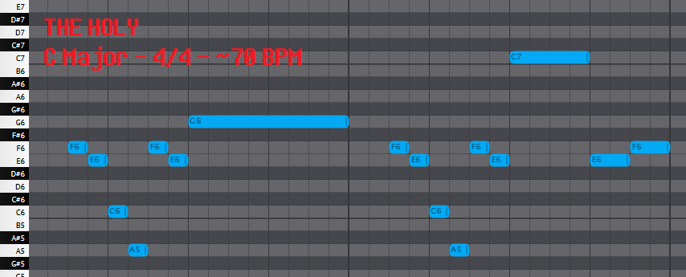
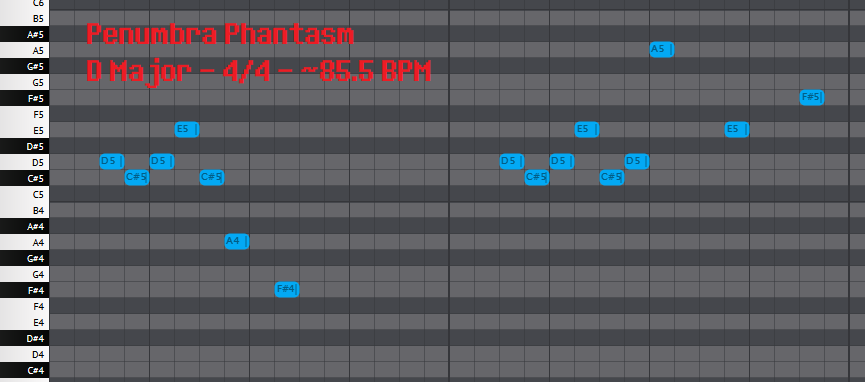

Prior to Undertale 's release, Toby Fox worked on a variety of projects, ranging from one-off compositions, to fan works of other media, to contributing to the Homestuck Original Soundtrack.
Interestingly, some of Toby Fox's prior compositions are either highly reminiscent of or nearly identical to some motifs used in Undertale and Deltarune.
Additionally, some songs and motifs in Undertale and Deltarune are evidently inspired by others' work.
This article will cover a variety of examples of this, ranging from simple inspiration, to the re-use of particular motifs.
Certain songs in Undertale and Deltarune were initially made for prior projects, only to be repurposed.
From the Undertale sheet music booklet:
"Ironically, this is one of many songs in this booklet not to be originally composed for Undertale."
"I actually created this for a fan-album called "I Miss You" as an attempt at creating an original "Game Over" theme."
Indeed, Fallen Down, the theme of Toriel, was orginally composed for the 2012 Earthbound tribute album I Miss You, as Fallen Down.
(See also: 'Fallen Down')
Also from the Undertale sheet music booklet, under Nyeh Heh Heh! :
"This song wasn't made for Undertale either."
"It (and Bonestrousle) were the main battle themes of an RPG game I was working on before Undertale, based off of a dream I had."
"However, I didn't plan it very well, so the project fell apart before I accomplished a single room."
" "Sans" was also a song in the game called "Muscles," and "Heartache" was a song called "Joker Battle." "
If you're familiar with the origins of Deltarune, this anecdote may ring a bell.
However, all that's relevant here is that these four were originally created prior to Undertale, and were simply repurposed for the game.
(See also: 'Nyeh Heh Heh!', 'sans.', and 'Heartache')
Sometimes, as opposed to the reuse of a full song, Toby Fox instead references only a part of a previous track.
Patient, composed by Toby Fox, is a remix of Doctor, the background music for the Land of Wind and Shade from Homestuck.
There are a few things of note about this:
('Another Medium', as heard in Waterfall and Another Medium, respectively)
Patient : 0:29-0:59
Of course, that's not the only similarity: both Another Medium and Patient use the exact same instrumenetation, including the same drum samples used in Cave Story.
(See also: 'Another Medium')
Cucumber Quest, written by Gigi D.G., is a web comic 'about bunny kids going on adventures', and is (as of writing) on indefinite hiatus.
Gigi D.G. is also credited for various pieces of concept art for Deltarune.
Importantly, Toby Fox composed two fan-made songs for the characters Noisemaster and Nightmare Knight, which appear to be the origins of two motifs:
('Metal Crusher', as heard in Metal Crusher)
Noisemaster : 0:35-0:52, 1:28-1:44
('The Door', as heard in The Chase)
Nightmare Knight : 0:48-1:11
Later on in the song, the melody is played in double-time, and slightly remixed:
Nightmare Knight : 1:30-1:53
(See also: 'Metal Crusher' and 'The Door')
(Web archive of Noisemaster)
(Web archive of Nightmare Knight)
Penumbra Phantasm has quite the storied history - originally composed by Toby Fox for Homestuck, it went unused despite numerous renditions and iterations (and leaks therof).
Eventually however, it appears that part of its melody was re-fitted for use in Deltarune as 'THE HOLY B'; take a listen:
('THE HOLY B', as heard in THE HOLY )
Penumbra Phantasm : 1:06-1:31
Later in the song, the melody appears in a slightly different form with a noticeably different ending:
Penumbra Phantasm : 1:54-2:18
Notably, Penumbra Phantasm also contains the 'Doctor' leitmotif used throughout Homestuck.
The leitmotif eventually found its way into Patient, another track Toby Fox composed, and the apparent origin of the 'Another Medium' leitmotif, as discussed above.
Anyway, although the similarity may have already jumped out to you, I still think it's worth dissecting the two melodies:
('THE HOLY B', as heard in THE HOLY )
('THE HOLY B', as heard in Penumbra Phantasm)
'THE HOLY B' has intervals of:
[-1 -4 -3]
[+8 -1 +3]
[-2]
[-1 -4 -3]
[+8 -1 +8]
[-8 +1]
Penumbra Phantasm 's quote has intervals of:
[-1 +1 +2 -3 -4 -3]
[+8 -1 +1 +2 -3 +1 +7]
[-5 +2]
Obviously Penumbra Phantasm 's quote is more complex, but it tells a similar story:
Penumbra Phantasm 's [-1 +1 +2 -3 -4 -3] intervals work as a more complicated form of 'THE HOLY B's [-1 -4 -3] intervals.
The former has extra [+1 +2 -3] intervals, but they still land on the same note they began on (C#-D-E-C#), meaning the [-1 -4 -3] intervals are largely kept intact.
Penumbra Phantasm then pulls the same trick, turning 'THE HOLY B's [+8 -1 +8] intervals into intervals of [+8 -1 +1 +2 -3 +1 +7].
After jumping back to the starting note ([+8] after [-1 -4 -3]), Penumbra Phantasm once again complicates a [-1] interval into [-1 +1 +2 -3], before slicing a [+8] interval into a set of [+1 +7] intervals.
Finally, both melodies end on a harsh fall followed by a short jump:
[-8 +1] in 'THE HOLY B', and
[-5 +2] in Penumbra Phantasm.
Overall, the melodies are very similar, especially considering the perfectly maintained sequence of [-4 -3 +8 -1] in both.
Of course, the melody is much more complicated and the ending is noticeably different than 'THE HOLY B's, but the overall sound of the melody is preserved.
Further, I argue it'd make sense for the melodies to be different in this way: the melody has been adapted for a significantly different song in wholly different project, so it makes sense that they'd have some differences, even in expressing the same motif.
(See also: 'THE HOLY')
(Youtube upload of Penumbra Phantasm)
A bit of an odd case, treasure_discovered.mp3 is a short track uploaded to Toby Fox's website, which features a backing melody later reused for THE HOLY :
('THE HOLY (BACKING)', as heard in THE HOLY )
treasure_discovered.mp3 : 0:00-0:41
(Web archive of treasure_discovered.mp3)
Here, we have an example of a leitmotif from another project being used in Undertale.
Item Haver is (was?) a game in development by VideoChess who, like Gigi D.G., later became a member of the Deltarune team.
I found it particularly difficult to find information regarding the game online, due to a combination of not having a Twitter account and having to navigate a maze of broken links and deactivated accounts across multiple sites.
That is to say, I can't really say much how the music in question was to actually be used.
Regardless, Toby Fox's website at one point hosted two tracks presumed to have been made for the game, havercity.mp3 and mystery.mp3 :
(havercity.mp3 and mystery.mp3, respectively)
The leitmotif these two share was later referenced in Undertale via the 'ballchime' easter egg; by typing B A L L on the keyboard on the title screen, a sound will play:
(snd_ballchime.wav)
This 'ballchime' appears to be the first three seconds of the melody of mystery.mp3.